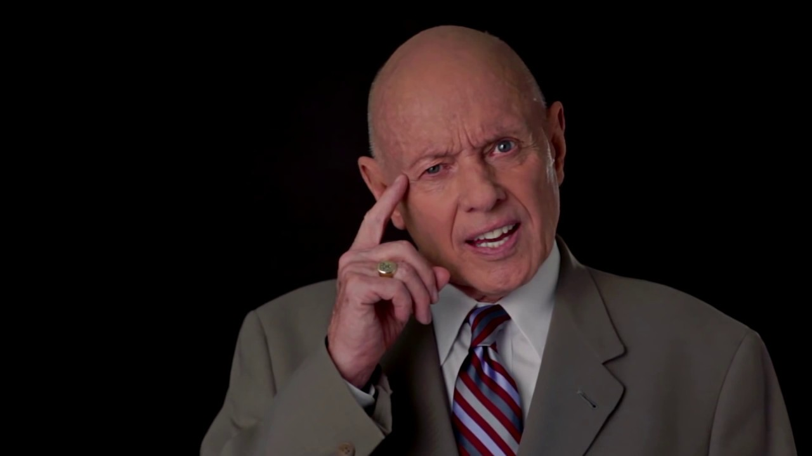
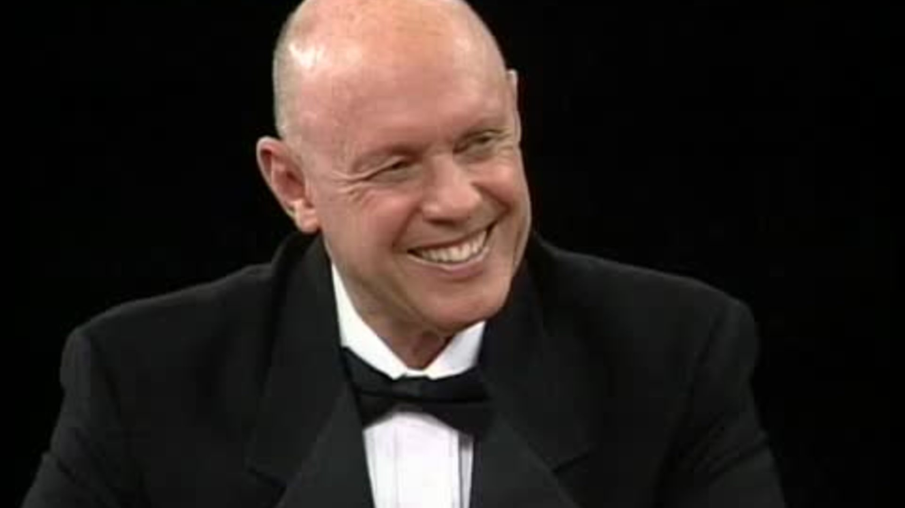

INDEPENDENCE
“Most of us spend too much time on what is urgent and not enough time on what is important.”

Interdependence
Genuine feelings for mutually beneficial solutions or agreements in your relationships. Value and respect people by understanding a "win" for all is ultimately a better long-term resolution than if only one person in the situation had gotten their way. Think Win-Win isn't about being nice, nor is it a quick-fix technique. It is a character-based code for human interaction and collaboration.
Use empathetic listening to genuinely understand a person, which compels them to reciprocate the listening and take an open mind to be influenced by you. This creates an atmosphere of caring, and positive problem-solving.
Habit 5 is greatly embraced in the Greek philosophy represented by 3 words:
- Ethos -- your personal credibility. It's the trust that you inspire, your Emotional Bank Account.
- Pathos is the empathetic side -- it's the alignment with the emotional trust of another person's communication.
- Logos is the logic -- the reasoning part of the presentation.
Combine the strengths of people through positive teamwork, so as to achieve goals that no one could have done alone.
“Live, love, laugh, leave a legacy.”
CONTINUAL IMPROVEMENT
The final habit is that of continuous improvement in both the personal and interpersonal spheres of influence.
Sharpen the Saw; Growth
Balance and renew your resources, energy, and health to create a sustainable, long-term, effective lifestyle. It primarily emphasizes exercise for physical renewal, good prayer (meditation, yoga, etc.), and good reading for mental renewal. It also mentions service to society for spiritual renewal.
“Start with the end in mind.”
